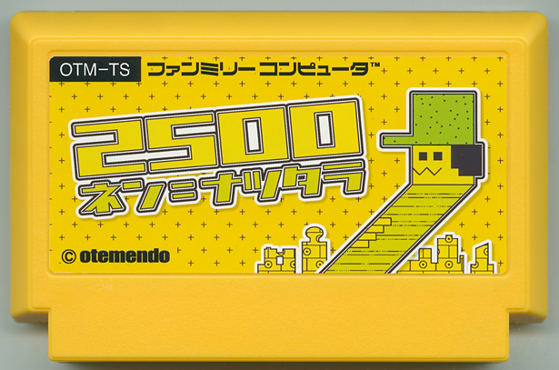

2500ネン ニ ナツタラ
坂上聡之／METEOR
世界がゴチャマゼになり、宇宙旅行も手軽になった西暦2500年頃。チキュウのトキオ・チキジョージで暮らす少年イチョウ君（虚弱体質）と家族と仲間達が繰り広げる、ひと夏のスペースオペラ。『宇宙船酔いにご注意』『トイレハドコデスカ？』『チョーピンチ！ 最後のチャンス』の３つの話を収録した、大宇宙を舞台としつつも、どこか懐かしく、ハラハラドキドキのオムニバス作品。